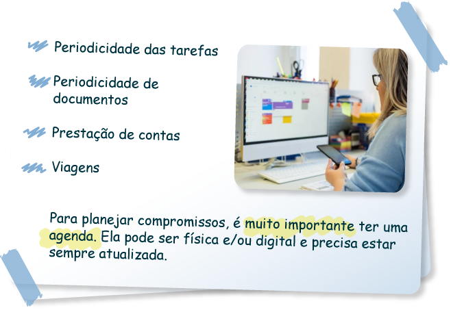

Ambiente e atividades secretariais: critérios de organização do ambiente e periodicidade das atividades
A organização é uma das características do profissional de secretariado. É muito comum, em oportunidades de trabalho, observar como requisito da vaga que o profissional seja organizado. Isso porque o secretário ou secretária gerencia diversas atividades no dia a dia. Caso o profissional não seja organizado, é muito provável que perca algum documento ou esqueça alguma tarefa.
Além disso, entender a periodicidade das atividades, ou seja, quando elas são realizadas, faz parte da organização.
Veja alguns critérios necessários para organizar o ambiente e a sua rotina de trabalho.
Critérios de organização do ambiente
A organização do ambiente de trabalho inicia pela disposição dos móveis no local, independentemente da modalidade, seja presencial, seja híbrida, seja home office. Isso porque eles devem permitir a passagem das pessoas, sem que elas precisem desviar de algo, e ser confortáveis, inclusive por questões de .
Ergonomia: A ergonomia é a ciência que “estuda a relação do ser humano com outros elementos do ambiente de trabalho (sistema) e a profissão”. Objetiva garantir a saúde e o bem-estar do trabalhador e qualificar o sistema de trabalho (Brasil, 2020).
Além disso, os móveis da secretaria de uma organização devem estar dispostos de forma que fiquem funcionais ao trabalho dos profissionais, permitindo agilidade na execução das tarefas. Isso não é uma regra, mas, caso seja possível, faz muita diferença a mesa da impressora, por exemplo, ficar próxima ao computador, o que facilita o trabalho dos profissionais da área.
Infelizmente, nem sempre a realidade das empresas é como a mencionada, pois, às vezes, uma impressora é utilizada por um grupo maior de pessoas. Porém, caso seja possível adequar o local, você perceberá que ele pode se tornar muito mais prático.
Um outro exemplo são os armários com arquivos. É importante que os utilizados frequentemente sejam armazenados em armários mais próximos à mesa do profissional de secretariado. Já os arquivos que não são muito utilizados podem ficar em um local mais distante, inclusive em outra sala.
Arquivos: Conjuntos de documentos produzidos e recebidos por órgãos públicos, instituições de caráter público e entidades privadas, em decorrência do exercício de atividades específicas, bem como por pessoa física, qualquer que seja o suporte da informação ou a natureza dos documentos.
O profissional organizado tem condições de localizar materiais e documentos rapidamente, permitindo agilidade e otimizando tempo para outras tarefas. Portanto, é de suma importância que você organize sua mesa de trabalho. Para tanto, verifique se há sobre ela algum objeto desnecessário ou algo que você não utilize frequentemente. Se for o caso, dependendo da utilidade do objeto, guarde ou descarte-o.
Conforme Medeiros e Hernandes (2010), o profissional deve ter à disposição: agenda; pasta para correspondência ou documentos; pasta com documentos para assinar; pasta de pendências; grampeador; borracha para tinta; lápis; bloco para recados; carimbos; régua; furador; clipes; elásticos; tubo de cola; canetas; papel de rascunho; papel sulfite; papel de carta com cabeçalho impresso.
Entretanto, é importante manter sobre a mesa somente aquilo que for necessário. Por exemplo, você pode ter uma gaveta na mesa somente para material de escritório, como canetas, lápis, apontador, borracha, grampeador, clipes etc. Com isso, você não deixa nenhum desses materiais expostos, e sua mesa fica mais organizada.
Os documentos devem ser arquivados assim que possível, para que não haja o risco de serem extraviados. Geralmente, a mesa do secretário é acessada por outras pessoas, como colegas, gestores e, às vezes, até clientes externos. Portanto, deixar documentos em cima da mesa pode causar imprevistos.
Ainda com relação à mesa de trabalho, você deve evitar ingerir líquidos quando estiver manuseando algum documento. Se o líquido for café e você derrubá-lo no documento, este pode manchar, demonstrando um aspecto de desorganização e falta de higiene. A água também deve ser ingerida com cuidado, pois pode borrar a tinta do documento. Porém, isso não significa que você não possa consumir água ou café. Apenas tenha cuidado para não os ingerir perto dos documentos.
Uma outra questão é o modo como você organiza o seu computador. Imagine a seguinte situação: uma pessoa observa a sua mesa, que está organizada, mas, quando ela olha para o seu computador, percebe que ele está cheio de post-its. Provavelmente, a pessoa achará que você é desorganizado. Por isso, o ideal é utilizá-los somente para breves lembretes, que podem ser eliminados rapidamente após concluídos. Se você sempre utilizar post-its, ou seja, deixá-los por dias e semanas no computador, acabará se acostumando com eles.
Caso você necessite de dados que utiliza frequentemente, como senhas, códigos, logins etc., separe uma das primeiras páginas da sua agenda e deixe todas as anotações nela, para consultá-las sempre que precisar – até porque os post-its podem perder o adesivo e cair do computador, fazendo com que você perca os dados que precisa.
Caso você não utilize agenda física, faça anotações em uma ou em um arquivo de texto e deixe-as em uma pasta de fácil acesso em seu computador.
Agenda virtual: É uma ferramenta amplamente utilizada no meio corporativo atualmente, pois permite compartilhar eventos e informa a disponibilidade dos participantes. Plataformas como Google e Microsoft Teams oferecem essa ferramenta gratuitamente.
Mantenha os arquivos digitais devidamente organizados. Para tanto, utilize os métodos de arquivamento para analisar os documentos. Você pode arquivar os documentos em ordem alfabética, em ordem numérica, em ordem cronológica etc. O importante é que os arquivos estejam em um local de fácil acesso, inclusive para quando alguém precisar consultá-los e você não estiver na empresa, por ocasião de treinamentos externos, reuniões ou até mesmo férias. Nesse caso, quando alguém for substituir você, conseguirá localizar os documentos com facilidade.
Além da sua mesa, você deve manter armários e outros mobiliários organizados. Para que você consiga organizar seus arquivos, considere a frequência de uso destes e escolha o método mais adequado de arquivamento para os documentos de sua área. Quando for etiquetar pastas, por exemplo, evite colocar etiquetas com o nome “diversos”, pois elas podem confundir o colaborador no momento de localizar um documento. Quanto mais objetivas forem as etiquetas, mais fácil será localizar os documentos.
Geralmente, o profissional de secretariado é a pessoa que organiza a sala dos superiores.
Portanto, fique atento à forma de organização que cada gestor apresenta. Uma dica é combinar, com cada um deles, formas de organizar a mesa e os documentos. Quando se trata da sala de outras pessoas, é essencial ter uma breve conversa antes, pois aquela pessoa já pode ter uma forma de organização.
Então, tente entender como cada um se organiza. Caso verifique que é possível melhorar algum aspecto, faça sugestões e demonstre como os critérios de organização deixam o ambiente mais prático.
Com relação à organização de ambientes, muitas vezes o profissional de secretariado é responsável por organizar a sala de reuniões. Sendo assim, você também pode seguir critérios similares à organização de sua sala. É necessário verificar se os materiais que estão em cima da mesa de reuniões são utilizados. Aqueles que não serão usados podem ser guardados em algum balcão ou em algum local da sua própria sala.
É muito útil ter um pequeno estoque de material de escritório guardado no armário da secretaria para eventuais contratempos. Então, você pode deixar na sala de reuniões materiais como canetas, lápis, borrachas, corretivos, papéis para rascunho, além de equipamentos necessários para fazer as projeções das apresentações. É fundamental que cada equipamento tenha um lugar adequado para ficar, para que seja possível manter tudo organizado.
Se a sala de reuniões tiver um balcão auxiliar, aproveite para deixar sobre ele alguns materiais que possam ser necessários, como materiais de escritório, laser pointer etc.
Um método muito utilizado nas empresas para manter a organização e aumentar a produtividade é o Programa 5S. Tal programa é uma metodologia japonesa que tem cinco critérios que auxiliam na organização dos ambientes de trabalho. O programa ganhou esse nome porque todas as palavras em japonês iniciam com a letra “s”. No Brasil, ele foi adaptado para “5 sensos”. Veja, a seguir, o que cada senso significa.
Clique ou toque para visualizar o conteúdo.
Caso a organização em que você atua não aplique o Programa 5S, pesquise mais a temática e verifique a viabilidade de inseri-lo na rotina da sua empresa. Além de manter os ambientes organizados, esse programa também possibilita mais produtividade.
No caso das reuniões on-line, é importante que o profissional de secretariado verifique se todos os convidados receberam o convite da reunião com o link de acesso e se este está funcionando. Se houver apresentação a ser projetada, o secretário, ou secretária, deve testá-la junto ao responsável antes da reunião, certificando-se de que o arquivo seja projetado com facilidade e agilidade. Também é importante que esteja preparado para lidar com imprevistos: no caso de a plataforma escolhida estar temporariamente indisponível, deverá conduzir os participantes da reunião para outra plataforma e garantir que a reunião aconteça sem maiores prejuízos.
Periodicidade das atividades
A organização também deve estar relacionada às atividades que o profissional de secretariado desempenha. Ele deve fazer um planejamento e organizar as atividades, tornando o cotidiano de trabalho mais ágil.
Para tanto, é importante identificar cada tarefa a ser realizada e verificar a frequência das atividades. Se o profissional de secretariado tiver um planejamento, poderá tentar organizar as ações do dia, das semanas, dos meses e até do ano inteiro. Para coletar tais informações, o profissional pode observar os seguintes itens:
- Periodicidade das tarefas
- Periodicidade de documentos
- Prestação de contas
- Viagens
Para planejar compromissos, é muito importante ter uma agenda. Ela pode ser física e/ou digital e precisa estar sempre atualizada.
Existem muitas formas de planejar atividades. Porém, o melhor é sempre planejá-las com antecedência, independentemente da situação. É comum em empresas receber a agenda do ano seguinte por volta dos meses de novembro e dezembro, caso a organização trabalhe com a agenda física. Do contrário, você pode programar as reuniões que ocorrem durante o ano, sejam elas semanais, mensais, anuais, tudo de acordo com a demanda da organização.
Para os compromissos diários do profissional de secretariado, é possível elaborar uma lista de tarefas. À medida que elas forem finalizadas, o profissional pode marcá-las como concluídas.
As atividades diárias podem ser: conferir a agenda do dia; despachar correspondências; realizar algumas ligações para os gestores; agendar reuniões; redigir documentos; comprar passagens; reservar hotéis; efetuar o pagamento de alguma despesa etc. Em resumo, as atividades diárias são atividades de rotina que o profissional executa praticamente todos os dias. Elas não têm a necessidade de constar na agenda, mas devem ser anotadas para que não sejam esquecidas.
Organize as tarefas:
Espera para objeto
As atividades mensais podem ter uma data fixa ou não. Um exemplo de atividade com data fixa é a prestação de contas da fatura do cartão de crédito. Muitas vezes, o responsável por prestar contas é o profissional de secretariado.
- Imagine a seguinte situação: você comprou passagens aéreas por meio do cartão de crédito corporativo.
- Portanto, precisa controlar todas as passagens que foram compradas em cada mês para depois prestar contas ao setor financeiro.
- Como você sabe a data de vencimento da fatura, próximo a essa data, o setor financeiro lhe entregará a fatura para conferência.
- Contudo, é possível que, em determinado mês, a fatura não chegue pelo correio e o setor financeiro não lhe passe o documento.
- Se você tiver anotada a data de vencimento, poderá questionar o setor financeiro, que poderá tirar um extrato da fatura por meio do aplicativo do cartão de crédito.
Todas as ações citadas demonstrarão que você é um profissional organizado.
Um ou dois dias antes, crie um lembrete sobre a fatura, pois, caso você não a receba, poderá acionar o setor financeiro para não correr o risco de um possível atraso no pagamento, o que demonstra proatividade.
Se houver um compromisso semestral, seja uma reunião, seja um evento, agende-o antecipadamente. Dependendo do tipo de evento ou reunião, é necessário providenciar alguns materiais. Então, tenha esses agendamentos com lembretes para não esquecer de tomar as providências necessárias para que o evento ocorra tranquilamente.
É importante pontuar que o profissional de secretariado geralmente é responsável por organizar e fazer as coisas acontecerem. Pense que, caso haja uma falha, a reunião ou o evento pode não ocorrer. Por isso, você deve certificar-se de que tudo que é necessário para o êxito da atividade está feito.
Os compromissos anuais também devem ser programados. Nesse sentido, é possível citar a assembleia geral ordinária (organizada por muitas empresas), as convenções, a festa de fim de ano, a Semana Interna de Prevenção de Acidentes do Trabalho (Sipat), o evento do Dia da(o) Secretária(o) etc. São diversas as possibilidades de agendamentos, as quais dependerão do tipo e do porte da organização.
O importante é o profissional fazer o planejamento. Agende as ações com o máximo de antecedência, principalmente se for um grande evento, pois, muitas vezes, algumas etapas precisam ser realizadas para que o evento aconteça. Quando houver a necessidade de serem feitas várias etapas, anote tudo na agenda, programe-se e antecipe-se sempre!
Nunca ache que é exagero planejar algo muito tempo antes, principalmente quando você já tem todas as informações da reunião ou do evento. O tempo passa muito rápido, e, muitas vezes, as atividades de rotina acabam tomando todo o dia de expediente. Por isso, é muito importante planejar e organizar tudo que for possível e sempre que possível. Não deixe para organizar tudo na última hora, pois você corre o risco de esquecer atividades importantes.
Plataformas on-line como Notion e Trello têm versões gratuitas e oferecem ferramentas para gerenciamento de projetos. Podem ser utilizadas para organização pessoal ou de equipe. É possível criar uma agenda e manter controle sobre suas demandas e seus prazos, bem como utilizar o método kanban para visualizar o que não foi feito, o que está sendo feito e o que foi concluído.
Imagine que você trabalha em uma cooperativa de produtores de arroz e que todos os anos é realizada uma assembleia geral ordinária, na qual todos os membros da cooperativa devem participar, pois nela são apresentados os resultados do ano anterior. Todos os anos, a assembleia ocorre em uma cidade diferente para que todos os funcionários tenham a possibilidade de participar pelo menos uma vez em sua cidade, economizando valores em transporte e hospedagem. Entretanto, quem não é daquela cidade precisa ficar hospedado em um hotel.
Você, como técnico em secretariado da cooperativa, será responsável por averiguar hotéis próximos ao local da assembleia.
A atividade deverá ser organizada com antecedência, evitando que os hotéis fiquem lotados e que não haja vaga para todos os cooperados.
Então, quando souber a data e a cidade onde a assembleia será realizada, você já poderá fazer as reservas ou as pré-reservas nos hotéis.
Provavelmente, você também precisará providenciar documentos, equipamentos, coffee breaks etc. Caso deixe para organizar tudo próximo à data, é provável que o evento não aconteça adequadamente. Além disso, lembre-se de que você não precisa viver como se estivesse em uma montanha-russa, com muitas surpresas e emoções.
Tudo que foi apresentado até o momento serve para que você perceba como é importante que o profissional de secretariado seja organizado.
Mantenha a sua mesa, os seus arquivos e os seus materiais impecáveis. Também não se esqueça de planejar as atividades quanto à periodicidade delas.
Pare e reflita: é mais interessante que se lembrem de você como uma pessoa organizada ou desorganizada?